Ojodu Technoburb CBD
-
A relatively large urban area situated at the outskirts of a city typically beside a major road or highway
-
Has been called Suburban business district, Perimieter cities, Technoburbs, Exurbia, etc
-
Has been used since the 1950s, but the term wasn't publicized untill 1991 in the book, Edge City: Life on the New Frontier, by Joel Garreau
-
Garreau showed how edge cities developed in the US, starting in the 1950s. Businesses were incentivised to open branches in the suburbs and consequently leave in many cases due to the boom of automobiles in that era, and the advent of telephones, fax, email and other electronic communication
Garreau established 5 rules for a place to be considered an Edge city:
-
Has five million or more square feet (465,000 m²) of leasable office space
-
Has 600,000 square feet (56,000 m²) or more of leasable retail space
-
Has more jobs than bedrooms
-
Is perceived by the population as one place
-
Was nothing like a "city" as recently as 30 years ago.
Examples of Edge cities
Los Angeles, CA
Washington D.C, WA
Chicago, IL
Variations of Edge cities
- Suburban business districts
- Suburban cores
- Major diversified centres
- Suburban activity centres
- Mini cities
- Cities of Realms
- Galactic cities
- Urban sub-centres
- Pepperoni-pizza cities
- Superburbia
- Technoburbs
- Nucleations
- Disurbs
- Service cities
- Perimeter cities
- Peripheral centres
- Urban Villages
- Suburban
- Downtowns
Study Area
Ojodu-Berger

Morphological Change in Ojodu-Berger from 1980-2021
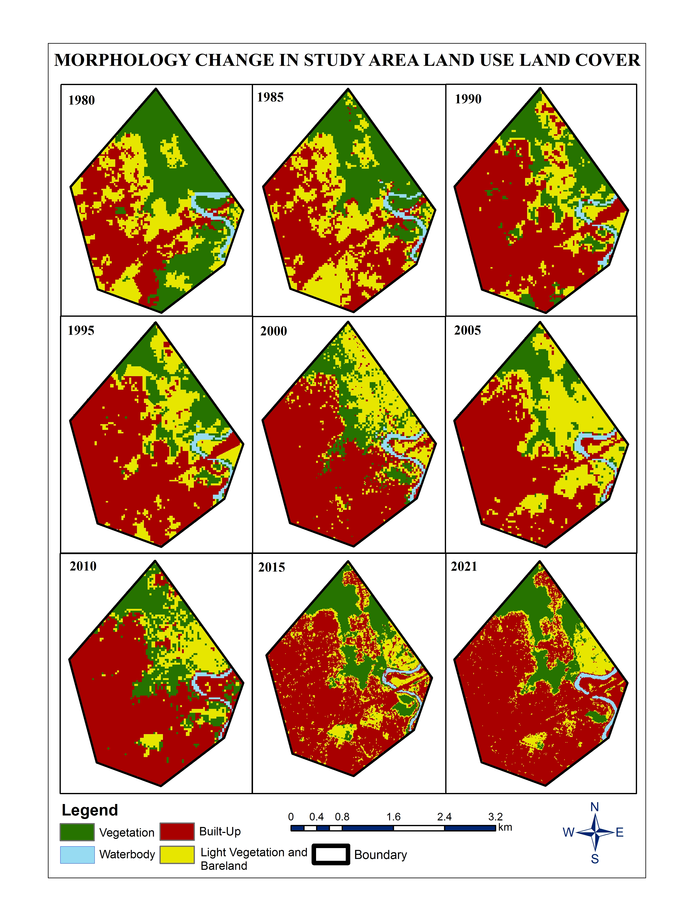Site Analysis and Maps
Location Analysis
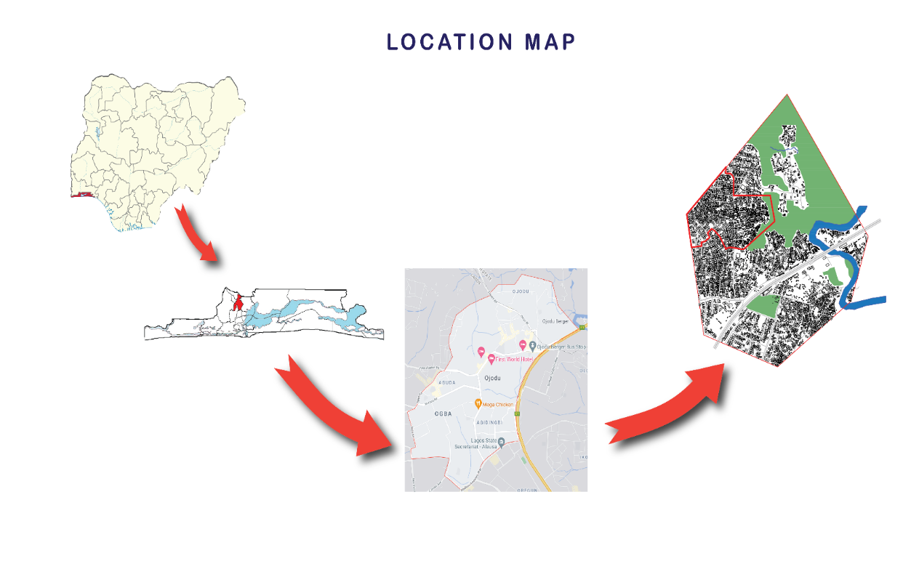Sectoral Map
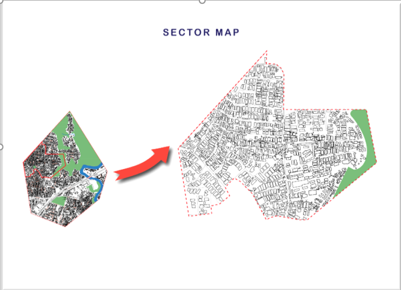Building Condition Analysis
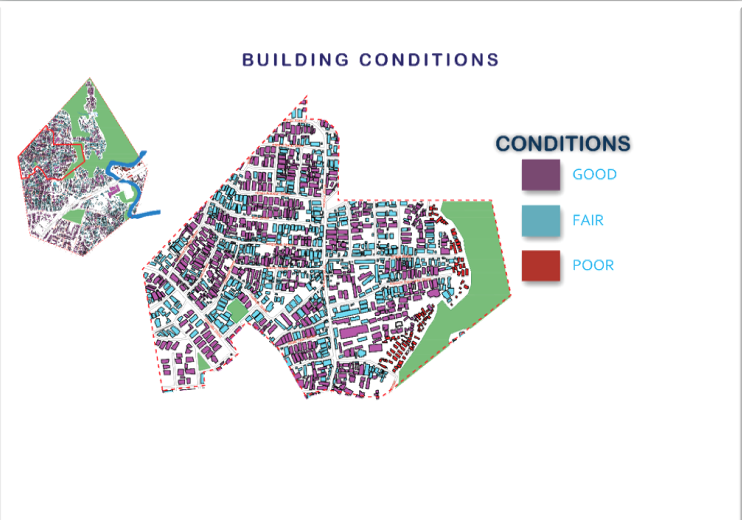vegetation Analysis
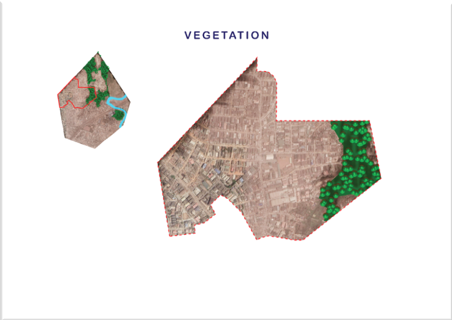Road Hierachy Analysis
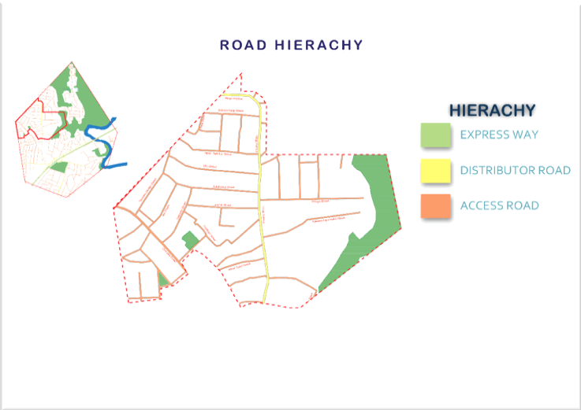Climatic Analysis
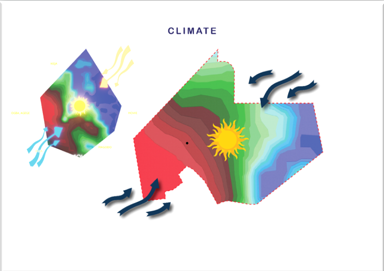Hydrology Analysis
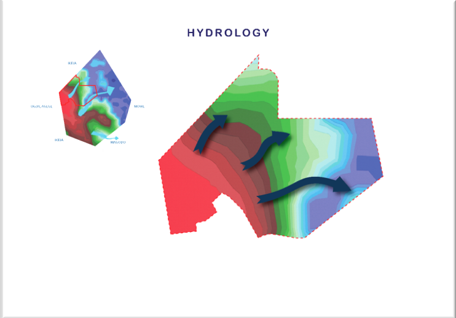Problem Identification
A list of problems relating to road usage, parking facilities, absence of NMT policies and infrastructure, et cetera were identified on the site. These problems are also represented graphically and would go a long way to shape our proposal maps. They include:
-
Irregular road width and poor driving sight range at Kosoko road linking ojodu abiodun
-
Uncoordinated parking space at Ojodu Berger Bus-stop
-
Insufficient road facilities/ infrastructures i.e., streetlights, road signs and signals
-
Dysfunctional shopping complex at Kosoko road that needs to be rebuilt and turn into a mall with multi-layered car parking system
-
Kara market is dilapidated and disorganized as the largest livestock market in Lagos, it needs to be redesigned and cleaned with policies, Kara market can also be expanded to serve other purposes such as food stuff.
-
Some parts of Ojodu Abiodun are decayed and needs repair
Picture Gallery of some identified issues in the study area

more issues...
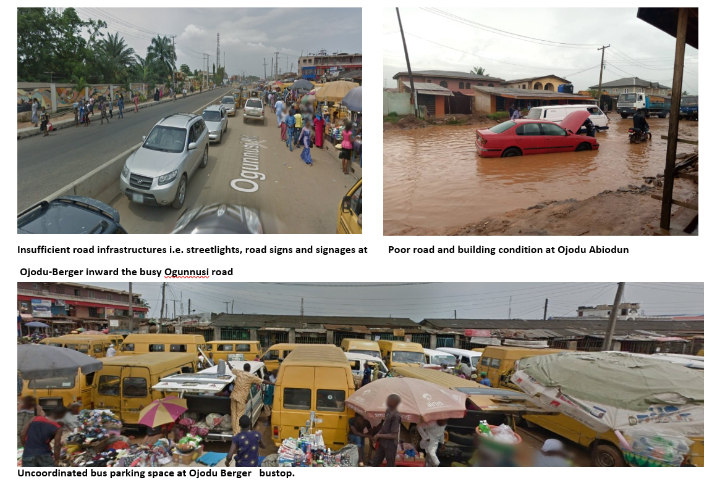Problem Identification Map
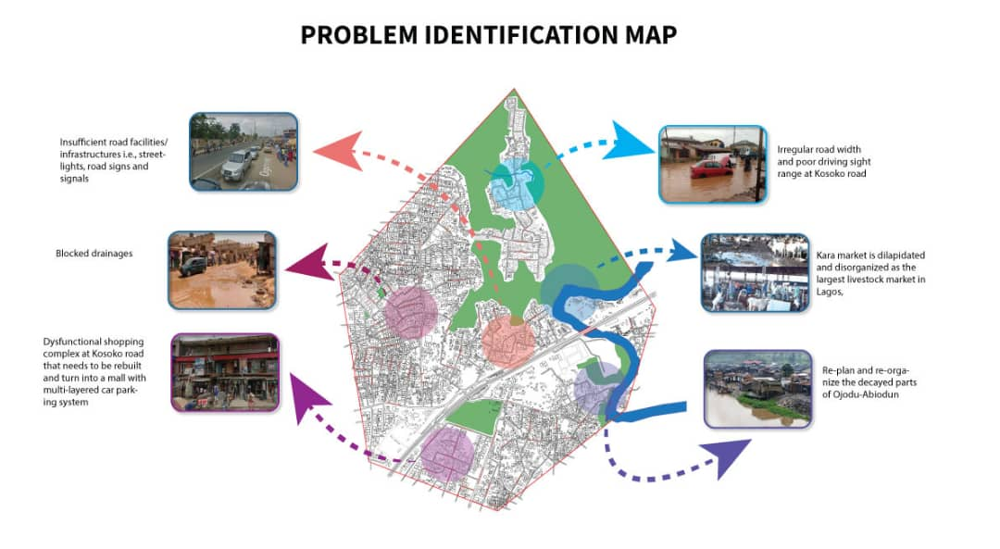Concepts

Concept A: Transportation and Economic Driven Edge City (T.E.D)
-
The goal is to ensure effective and efficient interaction between the land uses in the study area.
-
locating and siting transportation infrastructures in and around Ojodu-Berger linking land uses
-
Alade (2019) asserted that the rehabilitation and construction of roads, bridges, and road infrastructures have been proven to have a significant impact in the generation of economic revenue
-
Roads are critical enablement to improving the general living conditions in rural areas
Objectives of the T.E.D Edge city concept
-
Modernize Kara Market
-
Design a mini-residential estate on the empty land/vegetation at the fringe of Ojodu Abiodun
-
Construct a bridge linking Ojodu Abiodun to Kara market
-
Build a general hospital at the empty land/vegeation along Ojodu Abiodun road
Blow-out (Concept A)
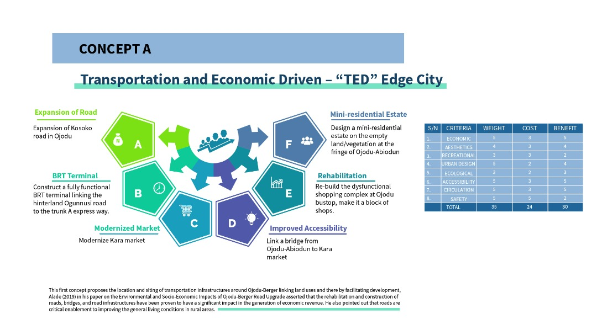High points of the T.E.D edge city concept
-
Work life balance (interconnecting land uses)
-
Improved economic base
- Transportation serving the industries clustered along Ogunnusi road
Concept B: Tech and Innovation Driven Edge City (T.i.D)
-
Smart infrastructures and Planning within Ojodu Berger
-
Non-motorized transportation along Ogunnusi road - one of the most important roads
-
Huge focus on new urbanism. Reducing the dependence of automobiles, more of walking centers, walkways, parks etc
-
Quick-Response codes for easy navigation
Objectives of the T.I.D Edge city concept
-
Creation of Wi-Fi hubs at bus terminals for QR-code scanning
-
Adoption of multi-layered car parks at different points at Ogunnusi/isheri road
-
Tech mall and office spaces at Ojodu-Berger
-
Bicycle routes along Ogunnusi road to encourage cycling mobility
-
Smart Traffic management system and Zebra crossing
High points of the "T.I.D" concept
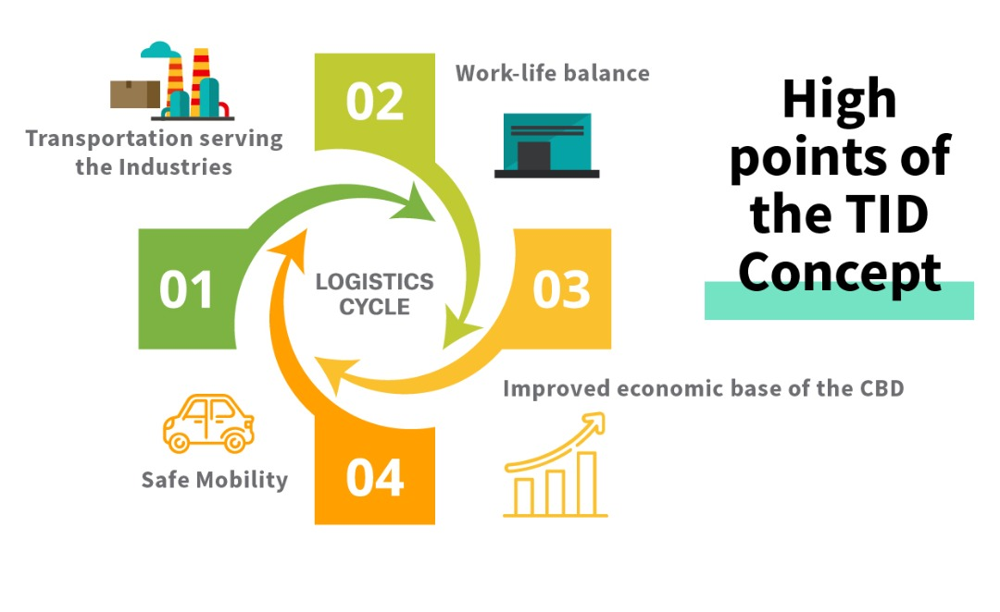Blow-out (Concept B)
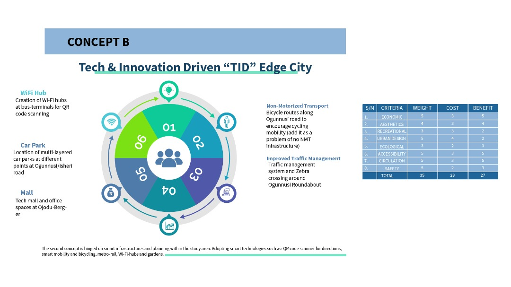Concept C: commix Techno burb
-
This is a combination of the T.E.D and the T.I.D edge city concept
-
The goal of Commix Technoburb is to make Ojodu a fully functional CBD as an Edge city
-
A Technoburb is basically an exurb that has developed the amenities and industries normally associated with a city
-
Ojodu-Berger could be reorganized to make it functional, with some smart infrastructures here and there to add life to the city
-
Ojodu-Berger is lacking in terms of land-use integration, economic development and smart infrastructures
Objectives of the Commix Technoburb concept
-
To modernize Kara market
-
Design a mini-residential estate on the empty land/vegetation at the fringe of Ojodu-Abiodun
-
QR-code for directions (Just-a-scan-away)
-
Link a bridge from Ojodu-Abiodun to Kara market
-
Multi-level Parking technology along busy commercial Ogunnusi road
Concept C
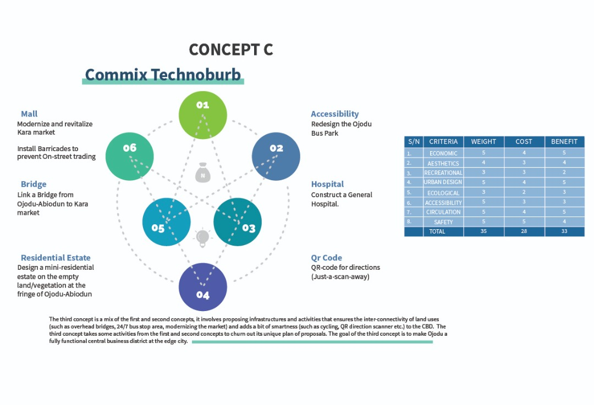Proposals
Commix Edge City Proposals
-
Conversion of Ojodu Mall to a Mega shopping mall with office complexes. This will attract people to the CBD
-
Revitalization of the Kara Cattle Market, converting it into a Multipurpose Market for livestocks and foodstuffs
-
Construction of a bridge between Ojodu Abiodun and Kara market to open up the area.
Commix Edge City Proposals cont'd
-
Site a multipurpose recreation area at the empty space at the fringe of Ojodu Abiodun, this will also house a sports center that will serve as a point of attraction
-
Site a general hospital also at the fringe of Ojodu Abiodun. The CBD should be self sufficient
-
Site musti-storey car-parks at major points along Ogunnusi road, being a highly industrialized area
-
Redevelopment of Ojodu bus-park. This will include Wi-Fi hubs and QR codes for directions
Proposal Blow-out
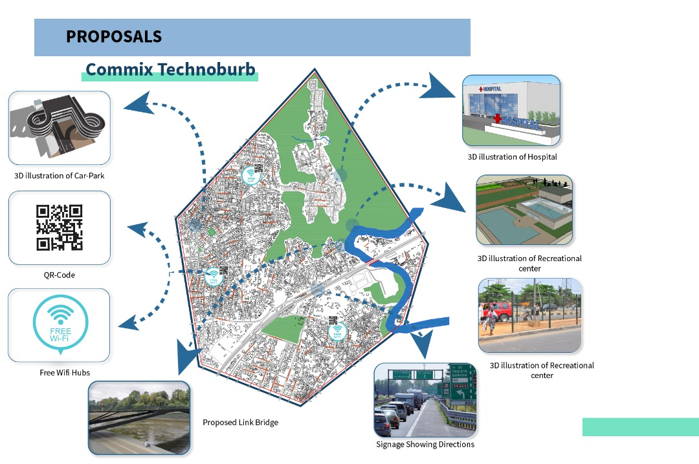Proposal (J.A.S.A.F.Y.D)
Proposal (General Hospital)
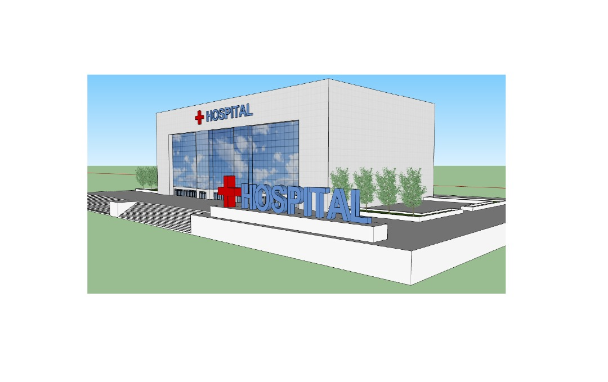Proposal (multi-storey carpark)
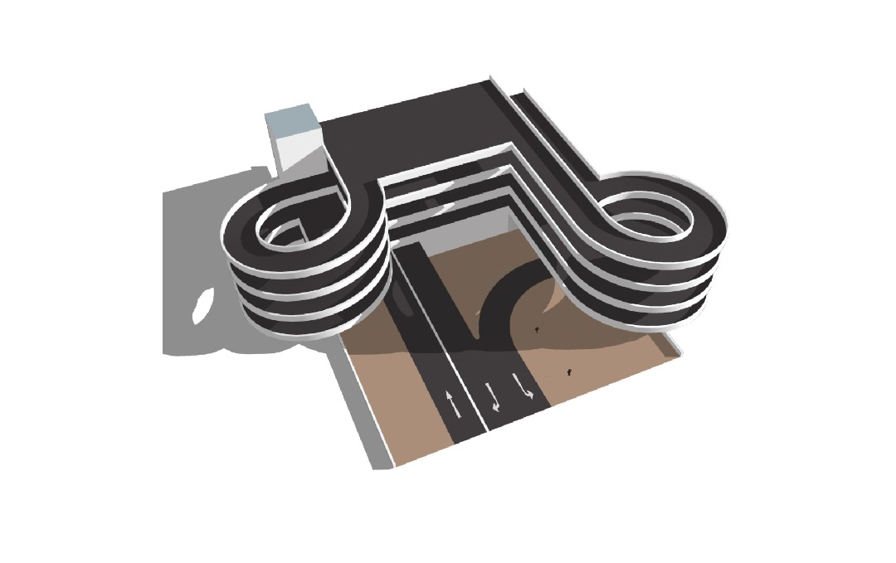Phasing and Implementation
Funding Sources
-
Public Private Partnership
-
Annual Budget of the government
-
Income gotten from other completed new developments in the CBD such as the multi-storey carpark, sports complex, multi-use mall, etc.
Implementation Phases
5 Phases, 8 years
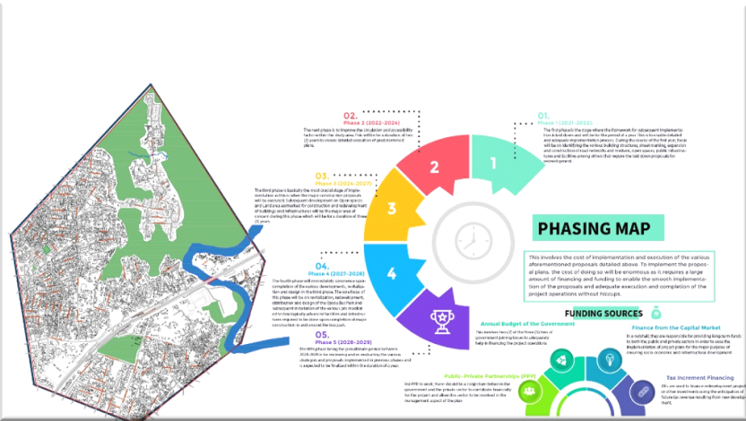-
Phase 1 (2021 - 2022)
-
Phase 2 (2022-2024)
-
Phase 3 (2024-2027)
-
Phase 4 (2027-2028)
-
Phase 5 (2028-2029)